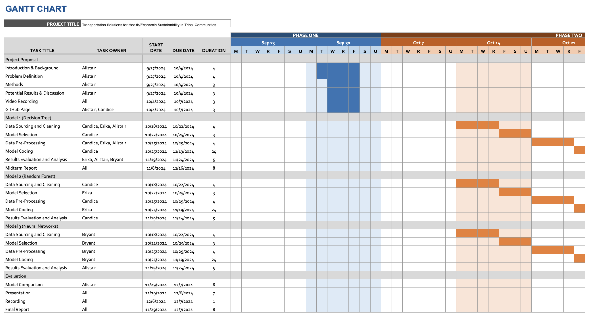
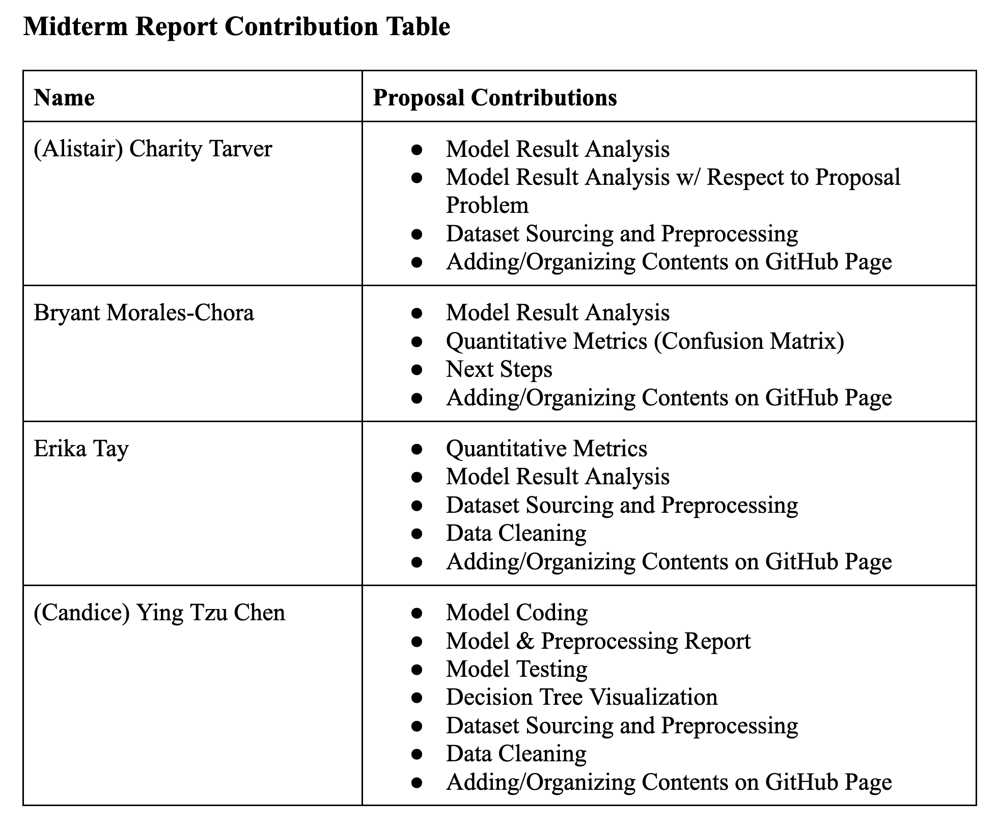

Members:
- (Alistair) Charity Tarver
- Bryant Morales Chora
- Erika Tay
- (Candice) Ying Tzu Chen
Midterm Checkpoint:
Introduction/Background
Safe drinking water is a fundamental right, yet many Native American communities struggle to ensure water quality. Research indicates serious health risks from contaminants, such as lead for instance, which can lead to developmental disorders and increased cancer risks [1]. The "2021 Report to the Congress of the United States on Sanitation Deficiencies for Indian Homes and Communities" reveals many tribal households lack reliable access to clean water, heightening public health concerns [2]. Environmental health initiatives emphasize urgent need for improved water, with continued posed risks [3]. Our data set consists of, the USGS National Water Information System (NWIS), the Water Quality Portal, and many more cross referenced with tribal water dependency locations using the Bureau of Indian Affairs resources to assess geographic areas.
Project Definition
The absence of effective predictive tools for water quality damages the ability of Native American communities and policymakers to respond to contamination events. Traditional monitoring methods often fail to provide timely alerts about rising pollutant levels, resulting in delayed responses, threatening public health, and highlighting the need for technological solutions enhancing water safety.
This proposal aims to develop a machine learning model using neural networks to predict levels of specific water pollutants in sources relied upon by the closest Native American communities to it, as well as looking at if they own/are in charge of this land near this water source. By leveraging historical water data and environmental variables, as well as geographical coordinates, the model seeks to identify trends and potential spikes in contamination. Such capabilities will empower communities to take proactive measures, reducing health risks, and thereby improving the overall well-being of the populations.
At this juncture, we have reached a point to showcase one of our models and how it has trained and visualized water quality data from water sources of nearby tribal nations.
What Model Did We Choose? Why?
For our midterm checkpoint, out of the three models we proposed, we chose to progress with the decision tree model for now. Below, we’ll be discussing and analyzing the process of data preprocessing and algorithm implementation for this model.
We chose the decision tree as our first model because we want to be able to quickly identify “safe” vs “unsafe” pollutants within water using decision pathways. With classification based standard trees, we can use it for directing paths between data points and a ‘decision’.
Data Preprocessing
The dataset we found is downloaded from the NWQMC[4], which includes the water quality data from various locations in the US with around 12k data points. In the data preprocessing phase, we want to first filter out the unneeded columns and preserve only the following features: state, county, longitude, latitude, result characteristic, result measure, result measure unit. While state, country, longitude, and latitude are pretty straightforward representation of the location where data was collected, the rest represents:
- Result characteristic: The type of chemical/pollutant/other factors affecting water quality what the researched measured (e.g. ammonium, acidity, nitrate).
- Result measure: Amount of the characteristic measured.
- Result measure unit: Since some characteristics are measured in different units, we will have to consider that.
Now that unnecessary columns are filtered out, we want to add two more columns: label and tribal name, where:
- Label: Determine if water is ‘safe’ or ‘unsafe’ based on the threshold of each result characteristic.
- Tribal Name: The tribe closest to the water source.
We will need the label column because the decision tree is a supervised learning method and we will need to feed the model the labeled data. Additionally, we want to include the tribe nearest to the water source as that is the main topic of our project.
We encountered an obstacle when trying to determine how we should go about labeling each data as safe or unsafe because there are lots of characteristics measured and it’s a lot of work to find the MCL threshold for each of them and label. Therefore, we looked into our data and decided to just include the 5 characteristics with more data points and better safe/unsafe ratio: ammonium, nitrate, lead, arsenic, and acidity/pH. We want a ‘better safe/unsafe ratio’, because after examining the dataset, we found that there is a lot more safe data than unsafe data. Therefore, we ended up ranking the occurrence of each characteristic from most to least, and chose the 5 characteristics with less skewed safe/unsafe ratio from top to bottom. Now, the ratio is still skewed, and we will be discussing how we try to fix it in the next section. After deciding on the 5 characteristics, we labeled each data according to the MCL threshold of the corresponding characteristic. Now we won’t need the result measure and result measure units anymore, since the units are different and including it in the final dataset may confuse the model.
Labeling the tribal name for each data was also a difficult task. At the beginning, we decided to label them based on state and county. However, given the time constraint, in the end we decided to label them sole based on longitude and latitude. We are able to find a dataset from BIA[5] that includes registered tribes and their locations (latitude/longitude), and proceed to map each tribe to the nearest location in our dataset based on latitude and longitude with geopandas. When we trained our model the first time, the feature gain for tribal names was pretty low because of how many tribes there are. Therefore, we revised the way we assign the tribes by only remaining the top 2 most populated tribes for each state in the location csv and assign those tribes to our water quality dataset based on that. We do realize that this is not especially a great way to represent the corresponding native american tribe, and will be discussing potential revision in our next step section.
Our final dataset consists of the following features: state, county, longitude, latitude, result characteristic, tribe name, and labels. Note that most of them are categorical features, which is suitable for a decision tree model.
Model/Algorithms
Decision Tree:
Trained with split ratio of 7:3 and default decision threshold 0.5
One Hot Encoding:
One hot encoder was used to transform categorical data into binary data for better performance. Since all of our features are non ordinal data, we used one hot encoding that is specifically suitable for that case. We also considered frequency encoding, which is better for high cardinality features, but the model performed worse when it is used instead of one hot encoding.
SMOTE Oversampling:
We have previously discussed the skewed ratio between safe/unsafe points in our dataset. To solve this problem, the SMOTE oversampling technique is implemented. SMOTE works by generating synthetic data points of the minority class, which is ‘unsafe’ in this case.
Hyperparameter Tuning with Cross Validation:
Since the model used is Decision Tree, we chose to focus tuning the following hyperparameters:
- Max Depth: Maximum depth of the tree
- Min Samples Split: Minimum amount of samples needed to split the tree
- Min Samples Leaf: Minimum amount of samples needed at each leaf
We used grid search so we can try multiple hyperparameter combinations at once. While doing so, we also evaluated the performance for each combination with cross validation to reduce the risk of overfitting and to ensure that we get the best result.
Results and Discussion:
Visualization:


Quantitative Metrics:
Our final confusion matrix represents the aggregated results of each corresponding quadrant across all 23 outputs. It showcases the model’s overall performance, illustrating the actual versus predicted classifications through a simple heatmap. The true negatives (TN) makeup 74.39% of the data, with 10254 instances where the model correctly predicted the water as safe. On the opposite end, the low true positive (TP) count of 860 represents only 6.24%, suggesting a weakness in accurately predicting when the water is unsafe. This is further proven by our false negative (FN) and false positive (FP) count, where there are 1165 FN cases (8.45%) where the model incorrectly predicted the water as safe, and 1506 FP cases (10.92%) where the model incorrectly predicted the water as unsafe.
Accuracy measures the overall correctness of the model by evaluating how many classifications proved true, represented by the equation: (TP + TN)/(TP + TN + FP + FN). However, this value can be misleading if the classes are not balanced. The dataset we selected had far more cases of safe water compared to unsafe, which would skew the performance. Therefore, we implemented Synthetic Minority Over-sampling Technique (SMOTE) to balance the classification distribution, giving us a final accuracy of 0.8062.
Precision evaluates the TP instances, represented by the equation (TP)/(TP + FP). A high precision value, one that is closer to 1, indicates the model is good at identifying positive cases or where water is unsafe. The model had precision of 0.3635, indicating that our decision tree had many false positives, meaning the model outputs a lot of false alarms or water as incorrectly unsafe.
Recall measures how many positive cases were correctly identified. Recall is equal to (TP)/(TP + FN). A high recall value, one that is much closer to 1 than 0, means that false negatives are minimized. The model had a recall value of 0.4247. This means that the decision tree does predict negatives incorrectly, when they are actually positive, often. For our purpose, this means that the model does predict that water is safe when it is actually unsafe often. The recall value is crucial, as it is important to detect when water is unsafe correctly, therefore a higher recall value is better.
Negative precision is equal to (TN)/(TN + FN), which is how many predicted negatives were actually negative. The negative precision of 0.8980 was much higher than the positive precision.
Negative recall is equal to (TN)/(TN + FP), which is how many actual negatives were correctly identified. The negative recall of 0.8719 was much higher than the positive recall.
Additionally, the F1 score is the harmonic mean of precision and recall.
The model outputted feature importance values. A higher score means that the feature has a greater impact on predictions, while lower scores mean the feature is less relevant. The feature importance values varied due to changes in hyperparameters, feature grouping or reducing, or resampling.
Analyzing Model/Algorithm: What It Means for Our Problem:
Based on the quantitative metrics above, the model is more accurate at identifying when water is safe, but struggles to identify unsafe water. It is important to note that accuracy can be misleading with imbalanced datasets like we have here. There is significantly more safe water than unsafe water within our training set. So, the model might predict "safe" water well, but it might fail to recognize "unsafe" water as effectively. This is especially apparent in the shape of our decision tree, with most of the diagram skewed left to favor the safe classifications.
There is also high precision and high recall for safe water, which when applied to our problem, could reduce any false alarms, ensuring that communities aren't unnecessarily alerted to a quality, safety issue when there isn't one.
However, there is low recall and low precision for unsafe water. The high number of FPs and FNs indicate that the model either, potentially, incorrectly classifies safe water as unsafe or classifies unsafe water as safe. If our goal is to minimize false alarms, precision should be the main focus. If our goal is to predict all unsafe water as unsafe regardless of false positives, recall should be the main focus. We can potentially improve this by adding more contextual features, like more geographic or seasonal data, to the model. Not doing so, would lead to undetected public health risks in Native American communities. If both recall and precision should be considered, we should look at the F1 score of the model, to minimize false positives (and false negatives).
Finally, regarding how the dataset relates to the problem we are solving, the average person could look at this and interpret it as showing there isn’t really that dire of a water quality issue. Most of the percentages of pollutants seem to fall under “safe”, right? And, considering this is data collected by the National Water Quality Monitoring Council of the US, the average person would assume it is reliable. However, there are a few factors why this isn’t the case. For one, in researching the safe and unsafe thresholds for each pollutant with the original dataset, there were samples collected in a manner in which the ensuing results were “provisional” rather than “accepted”, meaning there were possibly various factors surrounding its testing. What’s more, is that a “safe” classification from one sample instance doesn’t mean it stays that way, as it takes data spanning years to accurately predict the accumulation of these pollutants, and at what rate. And this is where most health issues reach a critical point, accumulating over years, until it reaches a threshold of severity. Next steps to consider would be including the years present in the dataset in which the samples were taken, to visualize a trend in pollutant accumulation.
Cross validation was used to help ensure the model does not overfit or underfit the training data. This helped the test data performance and increased generalizability.
The model addresses the class imbalance, as one class ("safe" water) is significantly more prevalent than the other ("unsafe" water) in the dataset. Now, given this is historical water quality data, it is very representative of what real world data is, nonuniform and skewed. More “safe water” classes skew the data for potential false positives.
We further address this using SMOTE in particular, as discussed before, attempting to oversample the minority class of “unsafe” water by generating synthetic samples based on what we already have.
Next Steps:
Revision on Preprocessing Dataset:
For the following models, we will refine the safe/unsafe distributions of our datasets to ensure an equal footing between both features. We plan to experiment with different methods, such as undersampling the majority, and finding a best-fit based on the algorithm. Additionally, we will place further emphasis on adding features that would boost a model’s predictive power.
Random Forest w/ Feature Importance:
Combines multiple decision trees in an ensemble approach to increase accuracy and decrease overfitting.
In this variant, we assess the importance of specific features when determining water quality. This would help us understand the impact each factor places on the model’s computation, allowing us to isolate the most critical pollutants within a final ranking.
Neural Networks:
Neural Networks can help us detect subtle patterns between external factors and pollutants within our dataset. We plan on exploring the following variants based on performance and effectiveness.
- CNNs: Effective in analyzing spatial patterns, making them useful in finding geographical hotspots vulnerable to water degradation
- FNNs: Effective in finding general trends, which would be used as a reference for the broader dataset
- RNNs/LSTM: Effective in time-series relationships, helping us isolate water quality patterns over time. This model can be useful for predicting future contamination events based on historical data.
References:
- M. Hanna-Attisha et al., "Elevated Blood Lead Levels in Children Associated with the Flint Drinking Water Crisis: A Spatial Analysis of the Flint Water Study," American Journal of Public Health, vol. 106, no. 2, pp. 283-290, 2016. [Online]. Available: https://ajph.aphapublications.org/doi/10.2105/AJPH.2015.303003
- U.S. Indian Health Service, "2021 Report to the Congress of the United States on Sanitation Deficiencies for Indian Homes and Communities," 2021. [Online]. Available: https://www.ihs.gov/sites/newsroom/themes/responsive2017/display_objects/documents/2021RTCSanitationDeficienciesReport.pdf
- Centers for Disease Control and Prevention, "Office of Tribal Affairs Addresses Environmental Health in Native American Communities," 2013. [Online]. Available: https://blogs.cdc.gov/yourhealthyourenvironment/2013/11/22/office-of-tribal-affairs-addresses-environmental-health-in-native-american-communities/
- NATIONAL WATER QUALITY MONITORING COUNCIL, Water quality data home. Retrieved November 9, 2024, from https://www.waterqualitydata.us/beta/
- Bureau of Indian Affairs, Tribal leaders directory. Retrieved November 9, 2024, from https://www.bia.gov/service/tribal-leaders-directory
- Passing categorical data to sklearn decision tree. (2024, March 4). GeeksforGeeks. https://www.geeksforgeeks.org/passing-categorical-data-to-sklearn-decision-tree/
- “How to Tune a Decision Tree in Hyperparameter Tuning.” GeeksforGeeks, 16 Apr. 2024. https://www.geeksforgeeks.org/how-to-tune-a-decision-tree-in-hyperparameter-tuning/
- Global Water Quality Database, "Global Water Quality Data." [Online]. Available: https://data.worldbank.org/dataset/global-water-quality
- National Water Quality Monitoring Council, "National Water Quality Monitoring Council Data." [Online]. Available: https://acwi.gov/monitoring/
- U.S. Department of Agriculture, "Census of Agriculture," USDA. [Online]. Available: https://www.nass.usda.gov/
- U.S. Environmental Protection Agency, "Water Quality Assessments," EPA. [Online]. Available: https://www.epa.gov/waterdata/water-quality-assessments
- U.S. Geological Survey, "National Water Information System," USGS. [Online]. Available: https://nwis.waterdata.usgs.gov/nwis/
Gantt Chart and Contribution Table:
 Link to Github Project
I'm hosted with GitHub Pages.